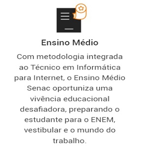
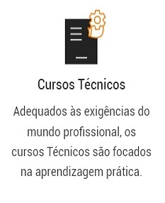
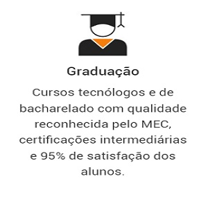

SENAC TECH
Página Inicial

Historia da Escola
A escola Senac Tech foi fundada com o objetivo de oferecer uma formação de excelência na área de tecnologia.
Desde então, a escola tem desempenhado um papel fundamental no desenvolvimento e capacitação de profissionais
nesse campo.
A criação da Senac Tech foi uma resposta à crescente demanda por profissionais qualificados em tecnologia, à
medida que o setor se tornava cada vez mais relevante e impulsionava a inovação em diversas indústrias.
Ao longo dos anos, a escola tem evoluído para atender às demandas em constante mudança do mercado de tecnologia,
adaptando seus currículos e programas de ensino para abranger as últimas tendências e avanços tecnológicos.
A Senac Tech tem investido em parcerias estratégicas com empresas do setor, proporcionando aos alunos acesso a
estágios, oportunidades de networking e experiências práticas no ambiente de trabalho.
A escola também tem se destacado por sua infraestrutura moderna, laboratórios bem equipados e recursos
tecnológicos avançados, criando um ambiente propício para o aprendizado prático e experimental.
Ao longo de sua história, a Senac Tech tem formado profissionais altamente capacitados, contribuindo para o
desenvolvimento do mercado de tecnologia e impulsionando a inovação e o crescimento econômico.
A escola tem se mantido atualizada com as mudanças tecnológicas, oferecendo cursos e programas que abrangem uma
ampla gama de disciplinas, desde programação e desenvolvimento de software até design de interfaces e segurança
da informação.
A história da Senac Tech é marcada pelo compromisso com a qualidade do ensino, pela busca constante pela
excelência acadêmica e pelo sucesso dos alunos em suas carreiras profissionais.
Com uma trajetória sólida e reconhecimento no mercado, a Senac Tech continua a se destacar como uma instituição
de referência na formação de profissionais de tecnologia, contribuindo para o avanço do setor e para a
preparação de profissionais capacitados e inovadores.



Depoimentos
Marcelly Marin
Ao cursar Informática Intensivo no Senac, tive uma experiência enriquecedora. Além de adquirir conhecimentos
práticos e teóricos relevantes para a área, pude contar com uma equipe de professores dedicados e experientes,
que contribuíram significativamente para o meu crescimento tanto pessoal quanto profissional.
O curso no Senac me proporcionou um aprendizado abrangente, cobrindo diversos processos e tecnologias essenciais
no campo da informática. Essa base sólida foi fundamental para me destacar no mercado de trabalho e garantir uma
posição no meu emprego atual.
Destaco também a oportunidade de conhecer professores incríveis, cujo conhecimento e paixão pela área me
inspiraram e incentivaram a buscar constantemente aprimoramento. A interação com eles foi essencial para ampliar
minha perspectiva e entender as demandas do setor.
Em resumo, minha experiência no Senac foi positiva e gratificante. O curso intensivo de Informática me
proporcionou o conhecimento e as habilidades necessárias para minha trajetória profissional, além de ter sido um
ambiente propício para o crescimento pessoal e a construção de uma rede de contatos valiosa.
Paula Fernandes Marques da Rosa
Os cursos do senac são muito úteis, ótimos professores, eles nos orientam sem nos dar as respostas apenas nos
guiam e e fazem isso de maneira excelente, além de toda a ajuda que temos com a instituição do senac que nos
ajuda se acontece algum problema. O curso técnico de recursos humanos, que foi minha escolha, nos proporciona
uma visão do funcionamento sistêmicos das organizações. Além disso, desenvolvemos capacidades importantes para o
nosso desempenho como planejamento, organização, comunicação, entre outras tantas que irão nos apoiar para nosso
crescimento acadêmico e profissional.
Camila Y Castro de Oliveira
Aprender um novo idioma é muito desafiador, além dá dúvida sobre qual língua escolher tem a dificuldade de
aprender a gramática e linguagem. Mas a metodologia dos professores e o sistema de ensino é completo, eles
tornam tudo fácil e de forna intuitiva, no final não restam dúvidas e você acaba se sentindo pronto pra
conquistar os seus objetivos.